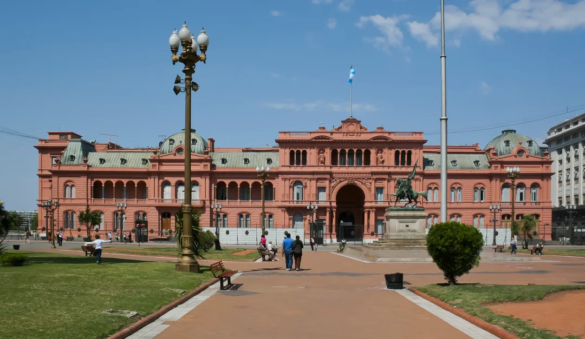
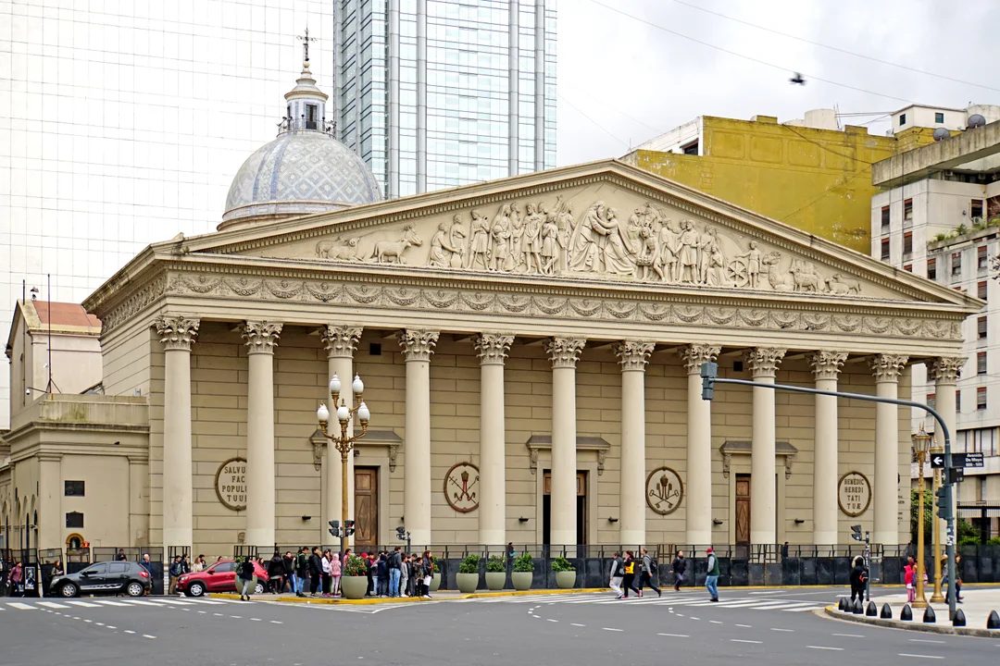
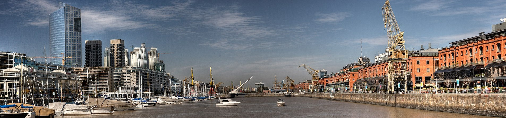

בואנוס איירס, ארגנטינה |
|
מידע על בואנוס איירסבואנוס איירס היא בירת ארגנטינה ואחת הערים הגדולות בדרום אמריקה. זו עיר חיה ותוססת שנמצאת ליד נהר ריו דה לה פלאטה, והיא ידועה באווירה האירופאית שלה, בבניינים יפים, ובשכונות צבעוניות ומלאות חיים. בעיר גרים מיליוני אנשים, והיא מרכז חשוב של תחבורה, כלכלה ותרבות במדינה. מזג האוויר בה מתון, עם קיץ חמים וחורף נעים יחסית, ולכן אפשר לבקר בה כמעט בכל עונה. בבואנוס איירס תמצאו רחובות רחבים, שווקים, כיכרות גדולות, מוזיקה בכל מקום, והרבה מאוד אוכל טוב שמייצג את המטבח הארגנטינאי. זו עיר שמצליחה לשלב בין חדש לישן ונותנת תחושה מיוחדת למבקרים בה. |
|
|  |
הקאסה רוסאדה – הסמל של בואנוס איירסהקאסה רוסאדה הוא אחד המבנים המפורסמים ביותר בארגנטינה, ונחשב לאייקון המרכזי של בואנוס איירס. הארמון הוורוד המרשים משמש כבית הנשיא של המדינה, והוא בולט מיד בזכות צבעו הייחודי והארכיטקטורה האלגנטית שלו. הבניין נמצא בלב העיר, מול כיכר מאיו, שהיא הכיכר החשובה ביותר מבחינה היסטורית ופוליטית בארגנטינה. לאורך השנים נערכו בכיכר עצרות, הפגנות ואירועים שהשפיעו בצורה משמעותית על המדינה כולה. סביב המבנה תמצאו גנים מטופחים, שבילים רחבים ומרחב נעים שמזמין מטיילים לעצור, להירגע וליהנות מהאווירה המקומית. עבור תיירים, הקאסה רוסאדה היא נקודת חובה שמספרת את הסיפור של ארגנטינה — שילוב של היסטוריה, תרבות ועוצמה לאומית. |
הקתדרלה המטרופוליטנית של בואנוס איירסהקתדרלה המטרופוליטנית של בואנוס איירס היא אחד האתרים הדתיים וההיסטוריים החשובים ביותר בארגנטינה. זהו המבנה המרכזי של הכנסייה הקתולית בעיר, והוא משלב ארכיטקטורה מרשימה עם משמעות לאומית עמוקה. חזית הכנסייה בולטת בזכות הסגנון הניאו־קלאסי שלה: שורת עמודים גבוהה ומאסיבית, גמלון רחב עם תבליטים מפורטים המתארים סיפורים תנ"כיים, וכיפה גדולה שמוסיפה למבנה מראה מכובד וייחודי. למרות שהחוץ מזכיר מקדשים אירופיים עתיקים, פנים הכנסייה מעוצב בסגנון שונה לחלוטין — עשיר, צבעוני ומלא בפרטים אמנותיים. בתוך הקתדרלה נמצא קברו של הגנרל חוסה דה סן מרטין, אחד המנהיגים החשובים בתולדות ארגנטינה ומי שנחשב לאבי העצמאות של המדינה. הקבר מוקף בשומרים טקסיים ומושך אליו מבקרים רבים שמגיעים לחלוק כבוד. מעבר לערכה ההיסטורי, המקום מציע אווירה שקטה ורוחנית באמצע מרכז עירוני סואן. המבקרים נהנים משילוב נדיר של ארכיטקטורה, אמנות והיסטוריה, מה שהופך את הקתדרלה לאחת מנקודות החובה לכל מי שמטייל בבואנוס איירס. |
 |
למה לבקר בואנוס איירס؟בואנוס איירס היא עיר תוססת ומלאת חיים שמציעה שילוב מיוחד בין סגנון אירופאי קלאסי לבין תרבות לטינית חמה וצבעונית. העיר מלאה בכיכרות רחבות, ארכיטקטורה מרשימה, שכונות צבעוניות, טנגו בכל רחוב ואוכל מצוין שנחשב לאחד הסמלים של ארגנטינה. כבירת הטנגו העולמית, הרחובות שלה מלאים באווירה מיוחדת, במפגשים תרבותיים ובהיסטוריה עשירה. זהו יעד שמעניק חוויה אמיתית של עיר גדולה עם נשמה — ולכן ביקור בבואנוס איירס הוא חוויה בלתי נשכחת לכל מטייל. |
|
אתרי תיירות בבואנוס איירס
|
|
|  | |